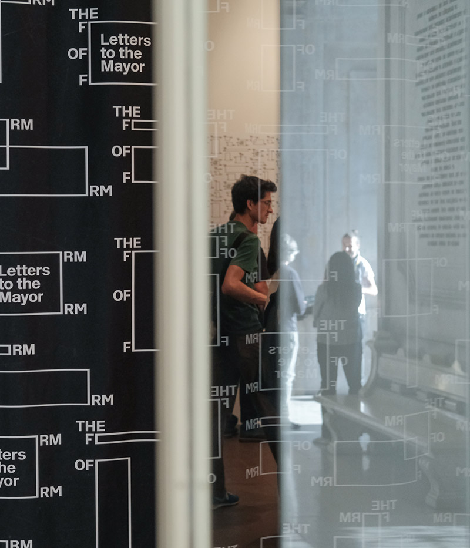

Ver mais notícias
Reportagem
Como é a vida no estaleiro?
Jornal Sábado
08-Dez-16
É "Obra", diz Pedro Fiori Arantes. O arquitecto e professor esteve em Portugal para dar uma conferência na Trienal de Arquitectura de Lisboa e falar sobre a exposição que tem na Fundação Gulbenkian.
Num episódio dos Simpsons passado no ano 2000, Marge envia uma carta ao arquitecto Frank O. Gehry a pedir-lhe que desenhe uma sala de concertos para a sua cidade, Springfield, a primeira do mundo a abolir o sistema métrico. O arquitecto lê a carta e, desinteressado da proposta, atira-a para o chão.
Não seria por falta de tempo, ou das conversas que andaria a ter com a Câmara Municipal de Lisboa para projectar o Parque Mayer. Gehry simplesmente achou que o pedido não merecia a sua atenção. Só que, ao olhar para o papel amassado no passeio, muda de ideias. Resultado: usa o papel tal e qual como está para ser a maquete da nova sala de espectáculos de Springfield.